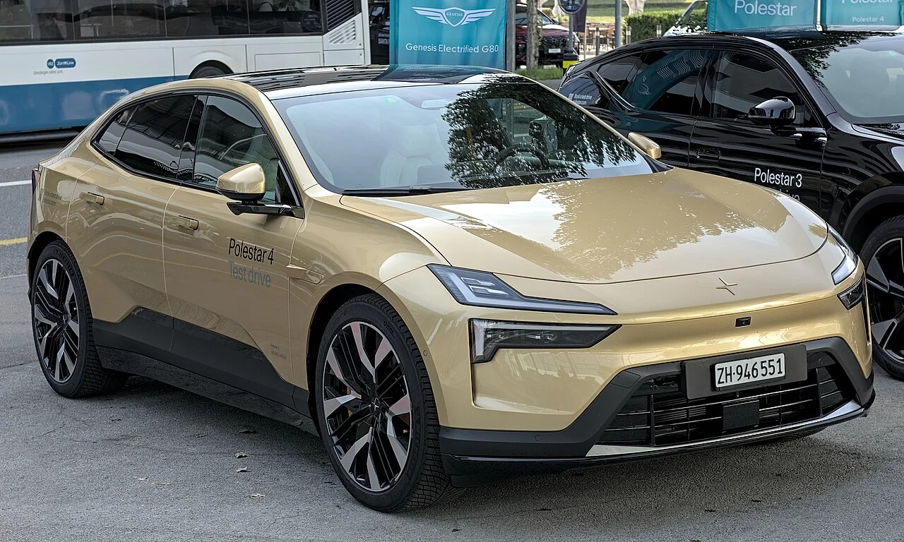
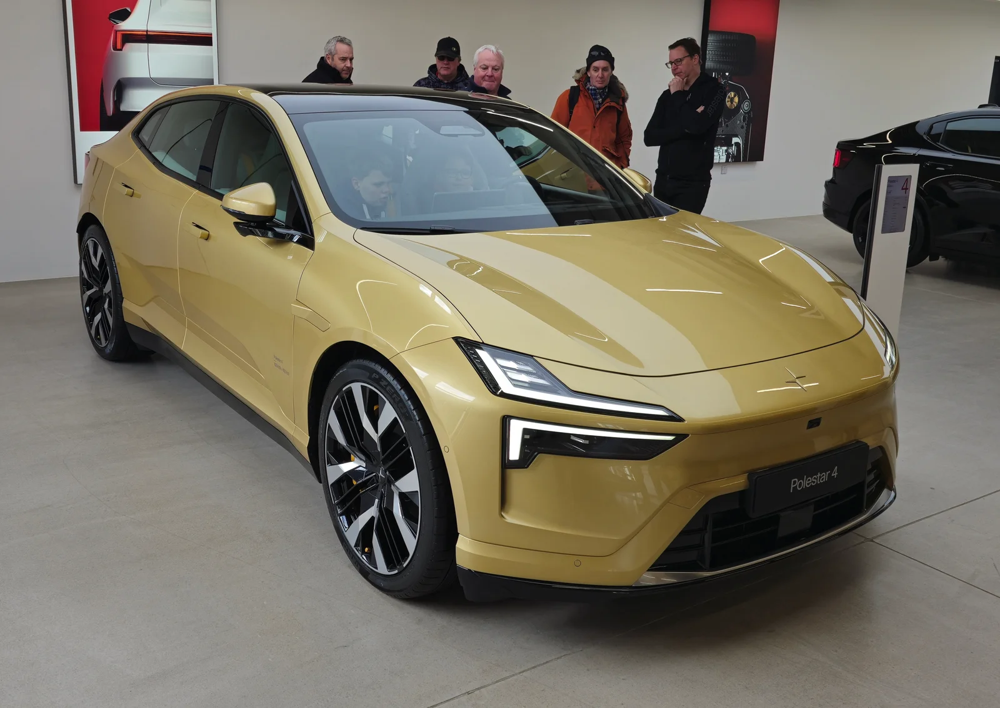
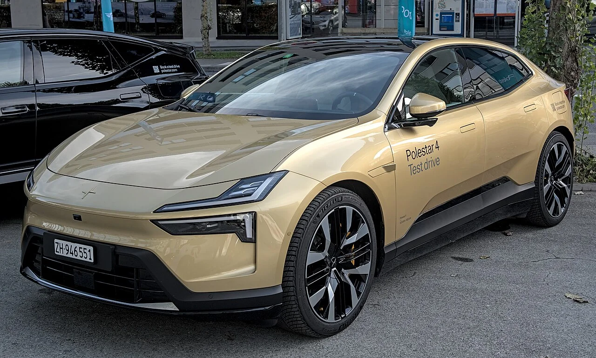

▲ 리어 윈드실드 없는 파격적인 디자인으로 화제를 모은 폴스타4 ⓒ Calreyn88, Wikimedia Commons (CC BY-SA 4.0)
폴스타코리아가 국내 전기차 시장에서 판매 호조를 이어가고 있는 '폴스타4'의 2026년형 모델을 공식 출시했습니다. 시작 가격은 그대로 유지하면서 옵션 구성을 강화한 것이 핵심인데, 공교롭게도 같은 시기 미국에서는 규제 이슈로 폴스타4가 사실상 마지막 판매 연식을 맞고 있습니다. 국내 출시 소식과 해외 시승 평가, 미국 시장 이슈까지 함께 정리했습니다.
1. 국내 출시 — 가격은 그대로, 옵션은 두둑하게

▲ 쿠페형 실루엣이 돋보이는 폴스타4의 측면부 ⓒ Alexander-93, Wikimedia Commons (CC BY-SA 4.0)
다나와·오토뷰 등 국내 매체 보도에 따르면, 2026년형 폴스타4는 롱레인지 싱글모터 6,690만 원, 롱레인지 듀얼모터 7,190만 원으로 기존과 동일한 시작 가격을 유지했습니다. 대신 고급 옵션의 폭을 넓힌 것이 특징인데, 한 번의 버튼 조작으로 투명도를 조절하고 자외선을 99.5% 차단하는 일렉트로크로믹 글래스 루프가 150만 원에 새로 추가됐고, 통풍·마사지 기능을 유지한 나파 가죽 시트 옵션은 기존보다 100만 원 낮아진 450만 원에 선택할 수 있게 됐습니다.
여기에 운전자 보조 시스템인 '파일럿 팩'이 전 트림 기본 사양으로 전환됐고, 3존 공조와 초미세먼지(PM2.5) 센서·필터도 기본 사양에 포함됐습니다. 신차 출고는 7월 중순부터 서울 스페이스, 하남 스타필드, 수원, 부산, 광주, 대전, 제주 등 전국 7개 리테일 거점을 통해 순차적으로 이뤄지고 있습니다.
2. 성능 & 해외 평가 — "진짜 개성 있는" SUV 쿠페

▲ 듀얼모터 기준 544마력, 정지 상태에서 시속 100km까지 3.8초에 도달하는 폴스타4 ⓒ Calreyn88, Wikimedia Commons (CC BY-SA 4.0)
폴스타4 듀얼모터는 최고출력 544마력(400kW)을 내며 정지 상태에서 시속 100km까지 3.8초 만에 도달하는데, 이는 폴스타 양산차 중 가장 빠른 기록입니다. 100kWh 셀 투 팩(cell-to-pack) 방식 리튬이온 배터리를 탑재해 최대 200kW 급속충전을 지원합니다.
해외 매체 오토블로그(Autoblog)는 폴스타4를 두고 "세련되고 현대적인 디자인, 넉넉한 실내 공간, 스포티한 성격, 최상급 정숙성과 승차감을 갖췄다"고 평가했습니다. 특히 듀얼모터 사양에 대해서는 "진짜 개성(soul)이 있다"며 "544마력의 가속력과 EV 시장에서 가장 독특한 실내 중 하나, 편안하면서도 정제된 승차감, 시선을 사로잡는 디자인을 갖췄다"고 호평했습니다. 다만 미국 EPA 인증 기준 듀얼모터의 주행거리는 약 280마일(약 450km)이지만, 실제 혼합 주행 조건에서는 220마일(약 354km) 수준에 그쳤다는 점은 아쉬운 부분으로 지적됐습니다.
3. 그런데 미국에서는 — 규제 때문에 사실상 단종 수순

▲ 폴스타4 후면부. 2026년형이 미국 시장 내 마지막 판매 연식이 될 전망이다 ⓒ S5A-0043, Wikimedia Commons (CC BY 4.0)
국내에서는 옵션까지 강화하며 판매를 이어가는 것과 대조적으로, 미국 시장에서는 2026년형이 사실상 폴스타4의 마지막 판매 연식이 될 전망입니다. 해외 매체에 따르면, 특정 중국산 하드웨어·소프트웨어를 탑재한 커넥티드카를 제한하는 미국의 새로운 규제로 인해 중국에서 생산되는 폴스타4가 더 이상 미국 시장에서 판매될 수 없게 됐기 때문입니다. 같은 차량이 시장에 따라 전혀 다른 운명을 맞고 있는 셈으로, 국내 소비자 입장에서는 오히려 이번 2026년형 개선판을 안정적으로 만나볼 수 있는 상황입니다.
종합하면 2026년형 폴스타4는 가격 동결과 옵션 강화라는 실속 있는 변화를 통해 국내 시장에서의 입지를 다지고 있습니다. 독특한 디자인과 강력한 성능, 정제된 승차감을 갖춘 만큼, 개성 있는 프리미엄 전기 SUV 쿠페를 찾는 소비자에게는 여전히 눈여겨볼 만한 선택지입니다.